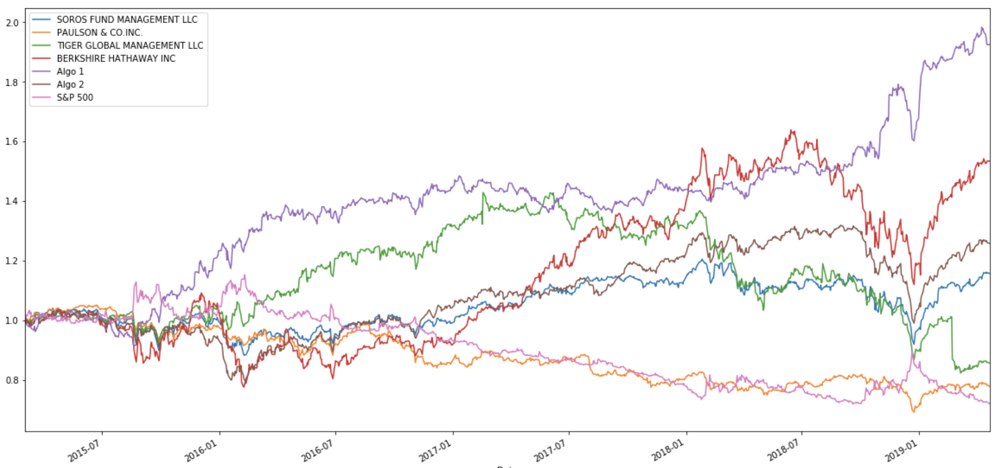
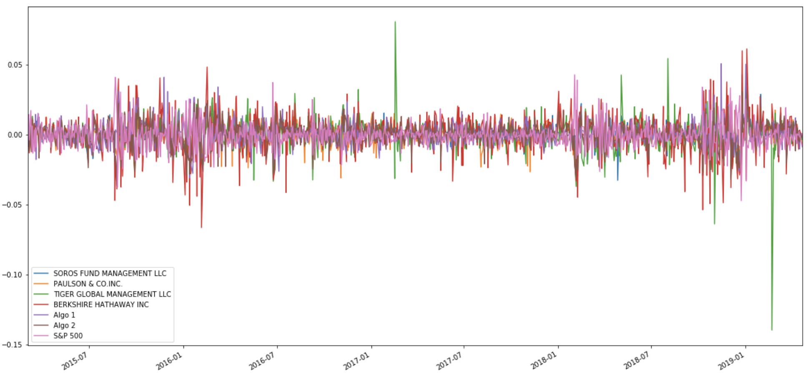

Investment Portfolios Analysis
Compared returns, volatility, Sharpe ratios, and risk of portfolios from hedge funds, whales like Buffett, algorithmic strategies, and a custom-built portfolio — finding one strategy that consistently beat the S&P 500.
Project Overview
In this analysis, I examined the performance of several portfolios, including algorithmic strategies (Algo1 and Algo2), portfolios from renowned institutional investors ("whales"), and a custom portfolio I created. I compared them against the S&P 500 across key financial metrics like cumulative return, volatility, standard deviation, correlation, Sharpe ratio, and rolling beta.
Performance Analysis
We began by visualizing cumulative returns to compare how each portfolio performed over time.
All portfolios eventually outperformed the S&P 500, but not throughout the entire timeline. Around April 2016, the S&P briefly outpaced all except Algo1. The algorithmic strategies showed promising consistency in long-term returns.
Risk Analysis
The daily returns and standard deviations gave us insight into risk and variability.
Box plots revealed that PAULSON & CO.INC. had the smallest spread in returns, while BERKSHIRE HATHAWAY INC. had the largest — making it the riskiest. This was confirmed with standard deviation values.
Rolling Standard Deviation
Rolling standard deviations show how risk fluctuates over time. Generally, all portfolios followed similar risk trends, but with differences in intensity and timing.
For example, between July 2015 and January 2016, S&P 500 risk increased while Algo1’s risk actually decreased — an example of inverse behavior.
Correlation to Market
We computed correlations to understand how closely each portfolio mimicked the S&P 500. PAULSON & CO.INC. had the highest correlation to the market, suggesting it tracks the index most closely.
Rolling Beta
By plotting the rolling beta for BERKSHIRE HATHAWAY INC., we could evaluate its sensitivity to the S&P 500. Interestingly, when market risk was low, the beta approached 1 — suggesting alignment. But when the market became volatile, Berkshire reduced exposure, showing a contrarian risk approach.
Sharpe Ratios
Sharpe ratios help determine return relative to risk. Here’s how the portfolios compared:
- Algo1 had the highest Sharpe ratio, outperforming all others
- Algo2 came next, beating all except Berkshire Hathaway and Algo1
Custom Portfolio Analysis
I created a custom portfolio from handpicked stocks, calculated the daily returns, and incorporated it into the comparison framework.
Results:
- It had the highest cumulative return over the entire period
- Its risk was higher than all but Berkshire Hathaway
- Sharpe ratio was second only to Algo1
- Rolling beta increased as S&P 500 became more stable
- Most correlated to Algo2 (corr = 0.755)
Conclusion
Both algorithmic strategies — especially Algo1 — delivered consistent returns with superior risk-adjusted performance. The custom portfolio proved to be a strong contender as well, confirming that with thoughtful stock selection, individual investors can potentially outperform institutional strategies.